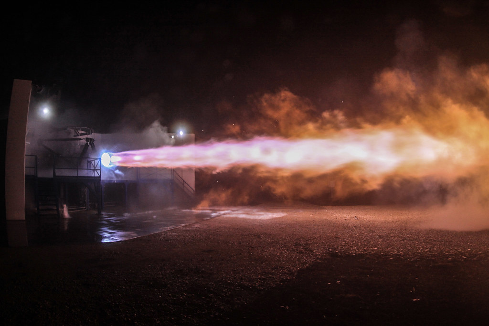

Le fotografie dei diversi Raptor mostrano un cambiamento evidente: tubazioni e apparati esterni diventano meno appariscenti, mentre il motore cerca più prestazioni e maggiore integrazione. È facile leggere questa trasformazione come una semplice semplificazione. Il lavoro reale è più difficile: eliminare componenti senza eliminare funzioni, ridurre massa senza ridurre margini, aumentare spinta senza rendere ingestibile il veicolo.

Il primo motore deve far conoscere il problema
Le prime prove permettono di misurare ciò che i modelli non descrivono completamente: stabilità, materiali, comportamento delle tenute, transitori e risposta degli impianti. Un motore sperimentale può portare sensori e soluzioni che non saranno mantenuti nella stessa forma nella produzione successiva. La sua complessità visibile non è necessariamente un difetto: può essere parte del lavoro di sviluppo.
Quando un progetto matura, alcune funzioni possono essere integrate, alcuni circuiti resi più diretti e alcuni componenti rimossi. Ogni cambiamento richiede una nuova verifica. Non basta guardare una foto per sapere quali prove siano state effettuate o quanto margine rimanga.
Dal singolo motore al gruppo
Super Heavy usa un gruppo numeroso di Raptor. Questo rende importante il comportamento dell’insieme: alimentazione, sequenza di avvio, interazione dei getti, vibrazioni e possibilità di continuare dopo uno spegnimento. Il fatto di possedere molti motori non rende irrilevante il guasto di uno di essi. Conta quando avviene e quali componenti vicini interessa.
La capacità engine-out significa mantenere una missione o una parte di essa con un motore non disponibile, entro condizioni specifiche. Non significa che qualunque guasto possa essere assorbito. Un evento che danneggia il sistema comune è diverso da uno spegnimento isolato e controllato.
Raptor al livello del mare e nel vuoto
L’ugello espande i gas per trasformare energia in spinta. L’ambiente esterno modifica il risultato. Un ugello ampio può essere vantaggioso nel vuoto e problematico dentro un’atmosfera più densa. La nave combina motori con funzioni differenti: non è corretto sostituire nella descrizione ogni Raptor con la stessa scheda.
| Distinzione | Perché conta |
|---|---|
| Versione di sviluppo | Hardware, produzione e margini evolvono; un valore storico non descrive tutte le versioni. |
| Motore atmosferico | Compiti che includono accensione, guida e atterraggio nell’atmosfera. |
| Motore da vuoto | Espansione ottimizzata per la fase spaziale. |
| Motore che vola e motore che torna | La storia termica e la necessità di riaccensione modificano le verifiche. |
Raptor 3 entra in volo
Il Flight 12, il 22 maggio 2026, segnò il debutto in volo dei veicoli V3 e di Raptor 3. Il resoconto documenta spegnimenti e risultati differenti fra nave e booster. Il debutto non va ridotto né a una prova perfetta di ogni motore né a una bocciatura dell’intera generazione.
Nel Flight 14, uno spegnimento anticipato del motore da vuoto durante la salita fu compensato allungando il lavoro dei motori rimasti. La squadra valutò poi le condizioni prima di autorizzare l’inserimento orbitale. La capacità di continuare è un risultato; la necessità di capire lo spegnimento rimane. Il ritorno abbreviato della missione mostra che prestazioni e prudenza operativa devono convivere.
La misura decisiva è la vita del motore
Spinta e impulso specifico contano, ma una macchina riutilizzabile chiede anche avviamenti affidabili, manutenzione praticabile, costo di produzione e durata. Un motore che raggiunge una prestazione eccezionale una volta non è automaticamente il più utile per una flotta. Il programma cerca una combinazione, non un primato isolato.
Le tabelle comparative dovrebbero quindi riportare condizioni e fonti, evitando numeri attribuiti a versioni non ben definite. Nel libro si preferisce non inventare una curva di affidabilità per Raptor 3 quando non esiste un campione operativo sufficiente e pubblico. Il dato più importante dei prossimi anni sarà quante volte lo stesso hardware potrà tornare al lavoro con controlli sostenibili.
Fonti pubbliche e tracce
- SpaceX, Starship. Pagina del costruttore: specifiche e obiettivi possono cambiare; consultazione 10 ottobre 2026.
- SpaceX, resoconto Flight 12. Resoconto del costruttore; obiettivi di prova distinti dal successo commerciale.
- SpaceX, resoconto Flight 14. Resoconto del costruttore; obiettivi di prova distinti dal successo commerciale.
- Livingjw e HVM, schema stimato Raptor 2, Wikimedia Commons. Ricostruzione indipendente, non disegno SpaceX. CC BY-SA 4.0; revisione Nyq del luglio 2026.

Consultare l’atlante tecnico
Caratteristiche, schemi, configurazioni e limiti: Raptor · McGregor.